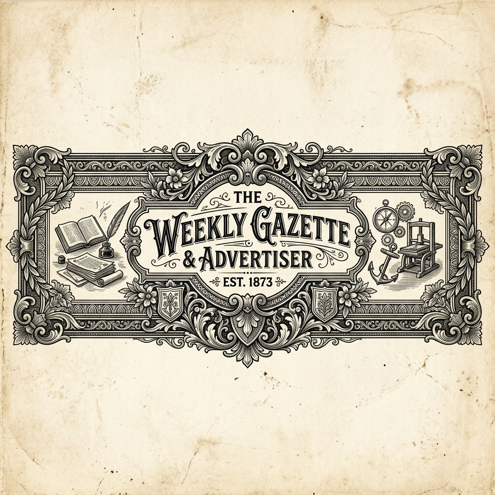

Akash Yadav's
A Personal Journal of Work, Ideas & Growth
Problems · Decisions · People · Impact

“My story won’t end at ‘he had potential,’ or ‘he had a bright future,’ or ‘he was destined for greatness.’ I’ll go ahead and actually become all of that. I’ll live out my potential and reach the highest level I possibly can.”
— Akash Yadav · By me, for me.
01 · Editor's Letter
A Note Before You Read
What connects seemingly different experiences — and where I'm headed next.
Read → About
02 · Journal Entry 01
From Engineering Problems to Business Decisions
A journey across engineering, strategy, analytics and leadership.
Read → About
03 · Field Notes
Inside a Large-Scale Water Infrastructure Project
Summer at L&T · Narmada–Kshipra Link Project · ₹65,000 Cr · Indore, M.P.
Open Entry ↗
04 · Leadership Notes
From Coordinator to Secretary
T&P Cell, BIET Jhansi · 60+ member team · Inaugural Pool Campus Drive.
Open Entry ↗
05 · Case Study 01
Where Does the Revenue Go?
Hospitality sector analytics · 10,000+ records · 4 cities · ~15% uplift.
Open Case Study ↗
06 · Case Study 02
Strategy Under Constraints
Epsilon 6.0 · SSCBS, Delhi · Top 20 among 250+ national teams.
Open Case Study ↗
07 · Learning Log
From Understanding Products to Trying to Build Them
Learning Product Management · Connecting with practitioners · Exploring AI tools.
Read → Learning
08 · Build Log 001
Akash Yadav's Journal
My first serious attempt at turning an idea into a digital experience.
Read → Learning
09 · How I Work
The Toolkit
Skills, methods and tools across product, strategy, analytics and execution.
Read → Skills
10 · Academic Record
Education & Credentials
B.Tech Civil Engineering, BIET Jhansi · Certifications · 2023–2027.
Read → Skills
11 · Off the Clock
When the Laptop Closes, the Scorecard Opens
Cricket, strategy, and the things that don't need a professional reason to be there.
Read → Connect
12 – 13 · Editor's Desk & Let's Connect
A Personal Note & Contact
The closing note — and an invitation to connect if you're working on something interesting.
Read → Connect
Akash Yadav's Journal · Volume I · 2026 · Work in Progress. Always.
I've always been curious about what happens before a decision is made — how a problem is understood, what information matters, whose perspective gets considered, and why one solution is chosen over another.
That curiosity has taken me through seemingly different worlds: studying Civil Engineering, working around large-scale infrastructure at L&T, leading placement operations at BIET Jhansi, competing in national strategy challenges, and using data to solve business problems.
At first glance, these experiences may not appear to follow a straight line. I don't think they need to. What connects them is the way I like to work: understand the problem, ask the right questions, work with people, use evidence where it matters, and turn an idea into something actionable.
Analytics complements that process. For me, data is not the destination; it is one of the ways I understand a problem better, challenge assumptions, and make stronger decisions.
Akash Yadav's Journal is my attempt to document that journey — not just through what I have done, but through the problems I have worked on, the decisions I have made, what those experiences taught me, and what I want to explore next. There is still a lot to learn, build and figure out. Consider this Volume I.
I'm Akash Yadav, a B.Tech Civil Engineering student at BIET Jhansi. My academic training began with engineering — structures, systems and the logic behind how things are built — but over time, I found myself becoming increasingly interested in a different layer of problems: the decisions behind them.
Why is one solution chosen over another? What does the user or stakeholder actually need? How do you make a decision when resources are limited? And where can data help you see something that intuition alone might miss? Those questions gradually took my experiences beyond the boundaries of my degree.
Intelligence Dossier
Current Conditions Report
Summer Internship · Larsen & Toubro
My summer at L&T offered a closer look at how engineering systems, operational decisions and technology come together in the execution of infrastructure at scale.
During my summer internship at Larsen & Toubro, I gained exposure to the Narmada–Kshipra Link Project — a ₹65,000 crore large-scale water infrastructure project designed to support water distribution across 163 villages and approximately 30,000 hectares. My work involved studying the project's execution framework and understanding how its pipeline and distribution network was planned and operated...
Training & Placement Cell · BIET Jhansi
A journey from Coordinator to Deputy Secretary to Secretary — and what changes when responsibility grows.
My journey with BIET Jhansi's Training & Placement Cell began as a Coordinator and gradually evolved into larger responsibilities — first as Deputy Secretary and subsequently Secretary. The progression changed my understanding of leadership. As responsibilities increased, the work became less about completing an assigned task and more about ensuring that people, communication and processes moved together...
Business Analysis · Hospitality Sector
Where is potential revenue being lost, and what could be changed to capture more of it?
Working with 10,000+ booking records across hotel properties in Delhi, Mumbai, Hyderabad and Bangalore, I analysed booking behaviour, occupancy, room categories, pricing and revenue performance to identify patterns behind underperformance. But identifying the patterns was only one part of the project...
Strategy · Business Analytics · National Competition
Determine how a platform should allocate resources across content opportunities under strict financial and platform constraints.
At Epsilon 6.0, our team was presented with an OTT content-acquisition problem: determine how a platform should allocate its resources across content opportunities while operating under strict financial and platform constraints. The challenge was not simply to identify the most attractive content. We had to determine which combination of investments created the strongest strategic outcome within the available budget...
My first serious attempt at turning an idea into a digital experience.
A conventional portfolio could fulfil the basic requirements. But that wasn't the experience I wanted to create. I wanted something that could communicate my work while still feeling personal — structured enough for a recruiter to navigate, but distinctive enough to reflect the person behind it.
That led to Akash Yadav's Journal — a portfolio built around the idea of a personal journal, where experiences become stories, projects become case studies, and the publication continues to evolve alongside my own journey. The process has pushed me to think beyond the idea itself—about the audience, information structure, design choices, implementation, what isn't working, and how each iteration can make the experience better.
The Building Process
AI-Assisted Building Desk
| Google Antigravity | Exploring AI-assisted development and agentic coding workflows. |
| OpenAI Codex | Using AI to help develop, modify and iterate on software. |
| AI-Assisted Prototyping | Experimenting with moving from idea to functional implementation faster. |
BUILDING NOTE · WHAT I'M LEARNING
Research & Strategy
Analytics & Decision Support
Leadership & Execution
Tools of the Trade
Data & Analytics
Communication & Build
B.Tech · Civil Engineering
My formal academic foundation is in Civil Engineering. My time at BIET has extended considerably beyond the classroom — through leadership in the T&P Cell, strategy competitions, independent projects, and an increasing interest in solving problems beyond the boundaries of my degree.
Senior Secondary · CBSE
Angel's Abode Public School, Tikamgarh · Class XII · Science
Secondary · ICSE
St. Lawrence School, Mehroni · Class X
Official Gazette · Certifications
Winter Consulting · 2025
Consulting & Analytics Club · IIT Guwahati
Consulting problem-solving, business analysis and structured approaches to case-based problems.
Ignite India · 2026
Wadhwani Foundation
Entrepreneurship, employability and professional development.
Google Digital Marketing & E-Commerce · 2024
Google Professional Certificate
Digital marketing, SEO/SEM, e-commerce, campaign measurement and digital customer acquisition.
“My story won’t end at ‘he had potential,’ or ‘he had a bright future,’ or ‘he was destined for greatness.’ I’ll go ahead and actually become all of that. I’ll live out my potential and reach the highest level I possibly can.”
— Akash Yadav · By me, for me.
Some things don't need to contribute to a résumé. You love them simply because they're a part of you.
Cricket isn't something I follow because I find the strategy interesting or because there is a professional lesson hidden somewhere in the game. I just love cricket. I love watching it, talking about it, following the Indian team, living through the close matches, celebrating the wins and getting far more invested in the losses than I probably should.
And somewhere along the way, Virat Kohli became a big part of why that connection with the game became so strong. Of course, there are the runs, the centuries, the chases and the moments that make you want to keep watching. But what I've always admired most about Kohli is his mentality.
The intensity. The self-belief. The hunger to keep improving. The refusal to give up when the situation is against you. The way he carries himself when the pressure is at its highest. There is something about watching someone care that much about what they do that stays with you.
I don't try to turn cricket into a lesson every time I watch it. Most days, I'm just a fan who wants India to win and Kohli to score. But if there is one thing I've unknowingly carried from watching him over the years, it is this:
Whatever you choose to do, care deeply about it. Give it everything you have. And never become comfortable with where you are.
Maybe that's why cricket — and Kohli in particular — means more to me than just another sport. It's been a part of growing up, something I've celebrated over, argued about, waited for, and returned to year after year. For me, cricket isn't an interest on a portfolio. It's personal.
My Cricket File
I'm always interested in meeting people who are building products, solving interesting problems, working with technology, or simply thinking about how something could be done better.
If you're working on something interesting, have an opportunity where I could contribute, or simply want to exchange ideas — I'd be glad to hear from you.
Contact
Akash Yadav's Journal · Volume I · 2026
Published, designed & continually revised by Akash Yadav.
A journal of things I've worked on, things I'm learning, and things I'm yet to build.
Work in Progress. Always.
03 · Field Notes · Larsen & Toubro · Summer 2025
My summer at L&T offered a closer look at how engineering systems, operational decisions and technology come together in the execution of infrastructure at scale.
During my summer internship at Larsen & Toubro, I gained exposure to the Narmada–Kshipra Link Project — a ₹65,000 crore large-scale water infrastructure project designed to support water distribution across 163 villages and approximately 30,000 hectares.
My work involved studying the project's execution framework and understanding how its large-scale pipeline and multi-point distribution network was planned and operated.
A particularly interesting part of the experience was studying the project's SCADA-based monitoring systems. I examined how operational parameters such as pumps, power consumption and water flow could be remotely monitored across six Break Pressure Tanks, giving me a practical view of how technology supports the operation of physical infrastructure.
Alongside this, I documented technical observations related to the distribution network and project execution, helping me understand how engineering design, technology, planning and operational coordination come together in infrastructure at this scale.
04 · Leadership Notes · Training & Placement Cell · BIET Jhansi
A journey from Coordinator to Deputy Secretary to Secretary — and what changes when responsibility grows.
My journey with BIET Jhansi's Training & Placement Cell began as a Coordinator and gradually evolved into larger responsibilities — first as Deputy Secretary and subsequently Secretary. The progression changed my understanding of leadership.
As responsibilities increased, the work became less about completing an assigned task and more about ensuring that people, communication and processes moved together. Today, the Cell works through a 60+ member student team and serves a student community of 1,200+, facilitating placement and career opportunities while coordinating between students, recruiters, faculty and the institute administration.
My responsibilities have involved placement operations, team coordination, institutional communication and documentation, supporting recruitment activities, and working with the leadership of the Cell on decisions affecting its functioning.
A Milestone: BIET's Inaugural Pool Campus Drive. Unlike a regular placement activity, this required coordination across recruiters, multiple participating institutions, faculty representatives, students and our own organising team. With a limited preparation window, the challenge wasn't simply creating a schedule — it was making sure that several moving parts worked together.
While the overall proceedings were monitored by the faculty leadership of the T&P Cell, I supervised the operational execution with my team, coordinating responsibilities and helping ensure that the drive progressed as planned. The drive eventually resulted in 59 selections across participating institutions, including 28 students from BIET Jhansi.
05 · Case Study 01 · Hospitality Sector · Business Analysis
Optimizing Revenue Leakage & Profitability in the Hospitality Sector — where is potential revenue being lost, and what could be changed to capture more of it?
Working with 10,000+ booking records across hotel properties in Delhi, Mumbai, Hyderabad and Bangalore, I analysed booking behaviour, occupancy, room categories, pricing and revenue performance to identify patterns behind underperformance.
But identifying the patterns was only one part of the project. I combined the internal booking analysis with competitor-pricing research and market observations to understand where pricing, occupancy and service utilisation were not working together effectively.
The analysis highlighted opportunities across areas such as weekday monetisation, room-category pricing, service bundling and utilisation, with recommendations varying by market and customer segment rather than applying one solution everywhere.
Tableau dashboards were then used to bring these findings together — tracking ADR, RevPAR and occupancy, and making it easier to compare performance across cities, properties and room categories.
*Based on project recommendations and scenario assumptions; projected, not realised revenue.
06 · Case Study 02 · Epsilon 6.0 · SSCBS, University of Delhi
Determine how a platform should allocate resources across content opportunities while operating under strict financial and platform constraints — Top 20 among 250+ teams nationally.
At Epsilon 6.0, our team was presented with an OTT content-acquisition problem: determine how a platform should allocate its resources across content opportunities while operating under strict financial and platform constraints.
The challenge was not simply to identify the most attractive content. We had to determine which combination of investments created the strongest strategic outcome within the available budget.
We worked through two scenarios — ₹700 crore and ₹1,000 crore — analysing variables including content performance, watch hours, merchandise revenue, geographic reach and other quantitative constraints. Statistical analysis, exploratory data analysis and correlation-based evaluation helped us identify relationships within the available data, while Tableau was used to visualise performance and cost-effectiveness.
But the final task was ultimately a decision problem: given limited resources, where should the platform invest — and what should it leave out? Our recommendations combined quantitative findings with strategic considerations around market penetration, content acquisition and resource allocation. The approach helped our team secure a Top 20 finish among 250+ participating teams nationally.